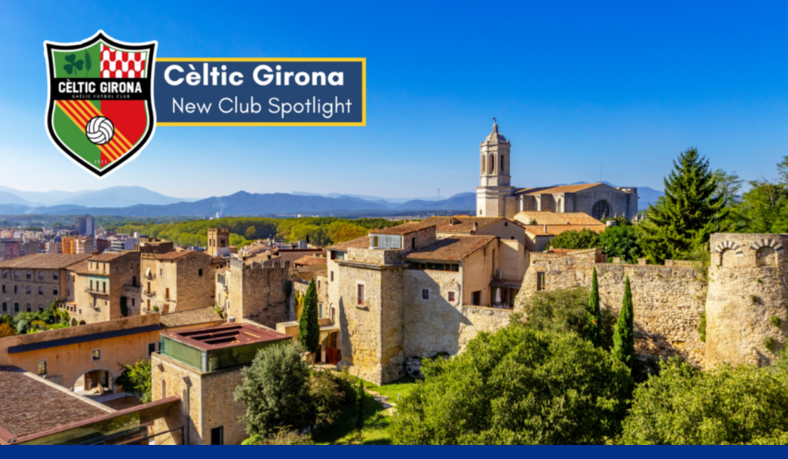
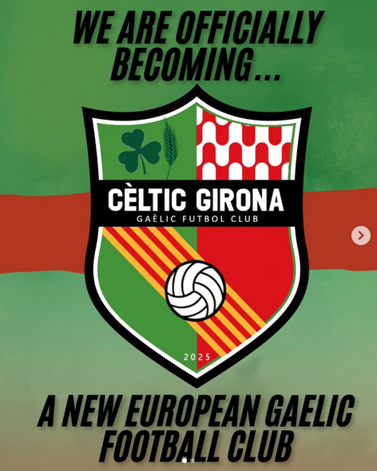
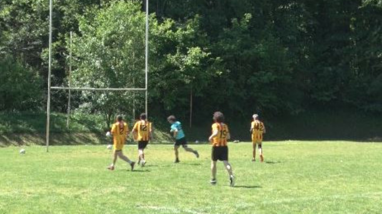
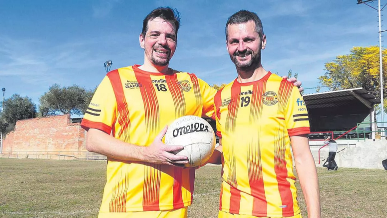
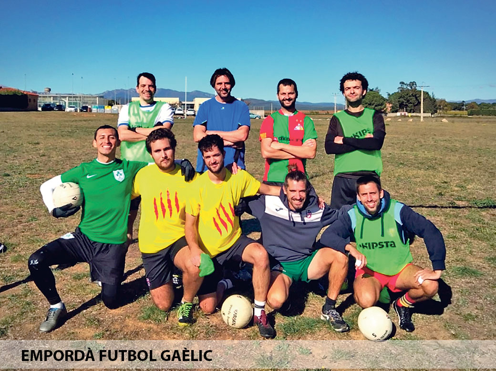
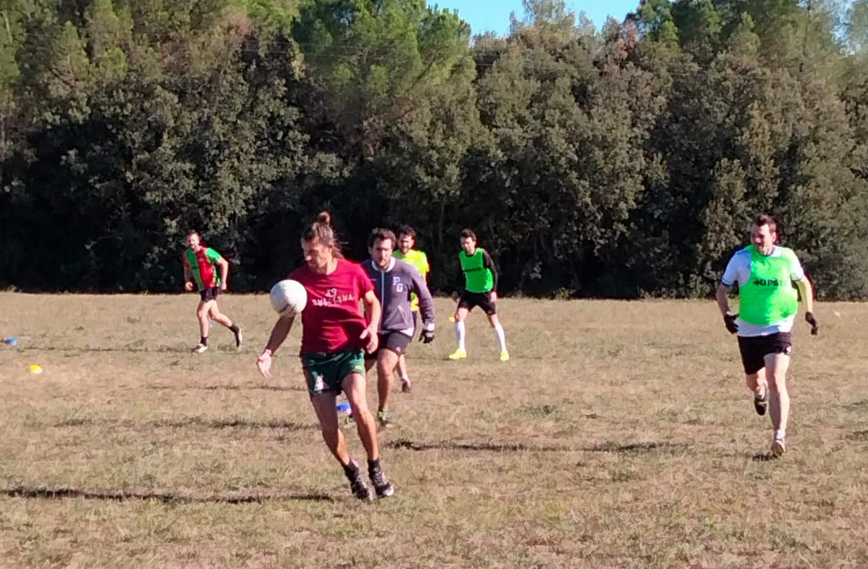

Gaèlic Futbol Club
El Cèltic Girona és el primer club de futbol gaèlic de la província de Girona i el tercer de Catalunya. El club reuneix jugadors i jugadores de diverses comarques, especialment estudiants de la Universitat de Girona, interessats a descobrir un esport diferent. Més que un simple equip, el Cèltic Girona vol ser un punt de trobada per a persones apassionades per l’esport i pel bon ambient. L’objectiu del club és créixer i competir contra equips en tornejos nacionals i internacionals de futbol gaèlic organitzats per Gaelic Games Europe.
Els entrenaments es fan cada dilluns de 19:00 a 20:30, en sessions mixtes que es duen a terme alternativament a les instal·lacions del Servei d’Esports de la Universitat de Girona i del Club Esportiu Pontenc.
Si vols venir a provar-ho, no dubtis a contactar amb nosaltres! ☘️♥️

El futbol gaèlic és un esport d’equip originari d’Irlanda que combina elements del futbol i del rugbi. Es juga amb una pilota rodona que es pot xutar, portar amb les mans i passar als companys. Cada equip intenta marcar punts xutant la pilota entre els pals de la porteria de rugbi o per sobre del travesser. És l'esport nacional d’Irlanda i la seva versió moderna es va codificar al 1887 amb la fundació de la Gaelic Athletic Association (GAA). Aquesta organització va establir regles clares i va promoure el joc com a símbol de la cultura irlandesa.
1. Cada equip juga amb 9, 11, 13 o 15 jugadors, depenent de la.competició i les dimensions del camp. A Irlanda sempre son equips de 15.
2. La pilota es pot jugar amb les mans i amb els peus, però no es pot llançar: s’ha de passar amb un cop de canell o xutar-la.
3. No es poden fer més de 4 passes seguits amb la pilota a les mans; després cal botar-la o fer un “solo” (deixar-la caure al peu i tornar-la a agafar).
4. No es pot agafar la pilota directament del terra amb les mans; s’ha de recollir amb el peu.
5. S’aconsegueix 1 punt quan la pilota passa per sobre del travesser, 2 punts si hi passa des de més de 40 metres, i 3 punts si entra a la porteria per sota del travesser.
6. El contacte físic és limitat: es pot disputar la pilota cos a cos, però no es permeten entrades dures, empentes perilloses o placatges.
7. No hi ha fora de joc, així que els jugadors es poden moure lliurement per tot el camp.
Pots descarregar el document oficial amb totes les regles del futbol gaèlic femení (2022) en català aquí:
Al Cèltic Girona creiem en l’esport com una manera de crear comunitat i connectar persones de diferents llocs i cultures. Promovem valors com el respecte, el treball en equip i el bon ambient dins i fora del camp. Volem ser un espai obert on tothom se senti benvingut, tingui o no experiència prèvia amb el futbol gaèlic. Junts fem créixer aquest esport a Girona i a tot Catalunya.







Accedeix a la botiga oficial del Cèltic Girona

El Servei d’Esports de la Universitat de Girona promou la pràctica esportiva al campus i, des de 2023, ofereix sessions d’introducció al futbol gaèlic i entrenaments bisetmanals. En les sessions podràs conèixer les regles bàsiques i practicar-ne les tècniques fonamentals d’una manera activa, accessible i divertida. Per cada sessió que fas sumes 4 punts per convertir amb 1 ECTS (40 punts).
Inscriu-te a l'activitat
McKiernans és un pub irlandès a Girona on trobaràs ambient gaèlic, menjar tradicional i cervesa acompanyats de música en directe. És el punt de reunió ideal per a fans del futbol gaèlic que volen veure grans partits. A més, McKiernans és el nostre patrocinador oficial de les samarretes.
Instagram McKiernans
McKeevers és la botiga d'esports que dissenya i comercialitza les equipacions del Cèltic Girona. Té els drets oficials per utilitzar el logo de la GAA, fabrica les equipacions a Irlanda i les samarretes estan fetes amb materials 100% reciclats, combinant qualitat i sostenibilitat.
Web McKeeversFes-te soci del Cèltic Girona i forma part activa del creixement del club. Com a soci o sòcia, podràs participar a l’Assemblea General Anual i contribuir directament a ajudar l’equip a cobrir les despeses relacionades amb l’activitat.
Si representes una empresa o un col·lectiu i vols formar part d’aquest projecte esportiu, contacta’ns per descobrir com podem col·laborar junts. Oferim diferents opcions de col·laboració i ens podem adaptar a totes les necessitats per crear aliances que s’ajustin perfectament a la teva realitat.
Envia'ns un correu